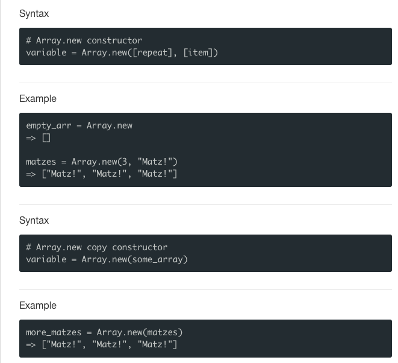
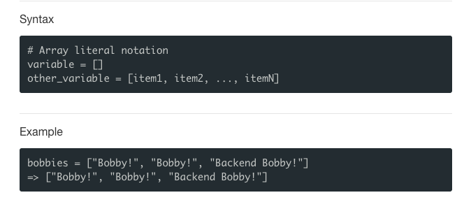
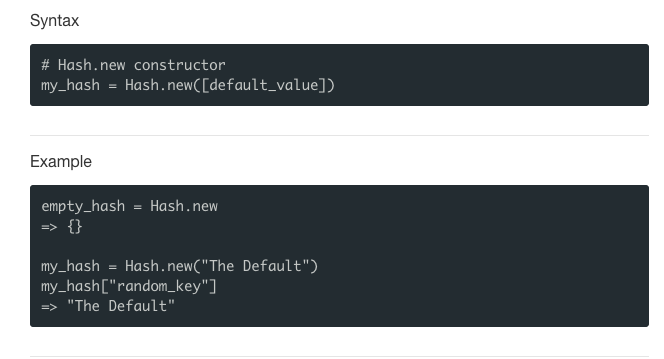
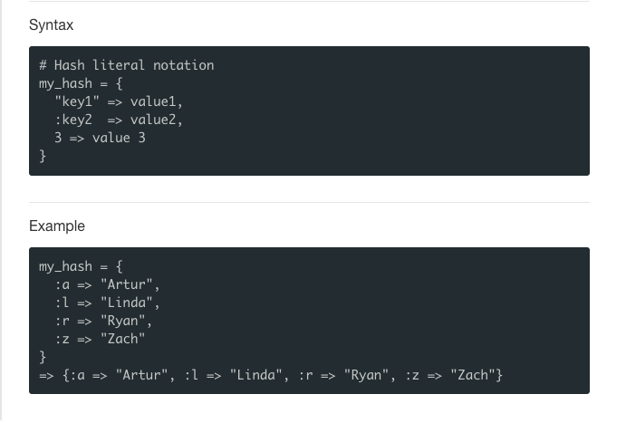

An array is a Ruby data type that holds an ordered collection of values, which can be any type of object including other arrays. Arrays are integer-indexed that start at 0. Ruby arrays can be created with either literal notation or the Array.new constructor.


Hashes
Hashes are collections of key-value pairs. Like arrays, they have values associated with indices, but in the case of hashes, the indices are called "keys." Keys can be anything that's hashable, such as integers, strings, or symbols, but they must be unique for the hash they belong. The values to which keys refer can be any Ruby object.


Creating Standard Hashes
There are several ways to create hashes in Ruby. The common most two are the new constructor method and its literal notation. It is also considered a best practice to use symbols as keys.